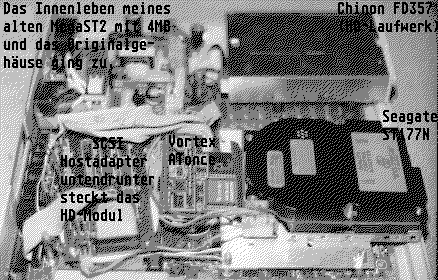

Previous
Next
TOC
Das Innenleben meines alten MegaST Computers
Im originalgehäuse stecken ein 3,5" High Density Floppylaufwerk,
eine 3,5" 60MB Festplatte dazu der nötige SCSI Hostadapter sowie
ein HD-Modul nebst passenden Floppycontroller. Zwischen dem SCSI
Hostadapter und der Festplatte, sitzt der Vortex ATonce MS DOS
Emulator. Der Hauptspeicher ist von 2 auf 4 Megabyte RAM erweitert
worden.

Kapitel Das Innenleben meines alten MegaST Computers, Seite 1